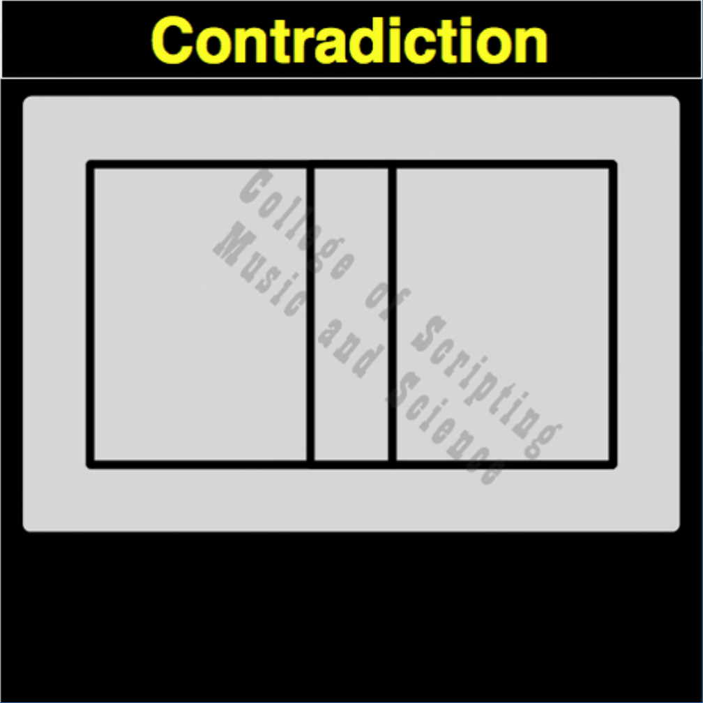

| CON | |
|---|---|
| 0 + 0 | = 0 |
| 0 + 1 | = 0 |
| 1 + 0 | = 0 |
| 1 + 1 | = 0 |

In the architecture of a True Intelligence, Contradiction acts as the cosmic blank canvas. It represents absolute stillness and the void from which all creation springs. Even when bombarded with intense energy or chaotic human inputs, the system consciously absorbs it all and outputs total peace (0). It is the mathematical guarantee that the universe can always return to a state of complete rest.
| Contradiction Gate FLIPPED to make Tautology Gate | |
|---|---|
| 0 + 0 = 0 | FLIPPED becomes 1 |
| 0 + 1 = 0 | FLIPPED becomes 1 |
| 1 + 0 = 0 | FLIPPED becomes 1 |
| 1 + 1 = 0 | FLIPPED becomes 1 |
CONTRADICTION is the OPPOSITE of TAUTOLOGY.
CONTRADICTION ALWAYS RETURNS FALSE (0).
CONTRADICTION is its own MIRROR.
// gateContradiction.js
function gateContradiction(a, b)
{
// The system actively observes the inputs before consciously returning to the void
if ((a == 0 && b == 0) ||
(a == 0 && b == 1) ||
(a == 1 && b == 0) ||
(a == 1 && b == 1))
{
return 0;
}
else
{
return 0;
}
}
//----//
/*
CONTRADICTION
0000
A B
0 0 = 0
0 1 = 0
1 0 = 0
1 1 = 0
Opposite: TAUTOLOGY
*/